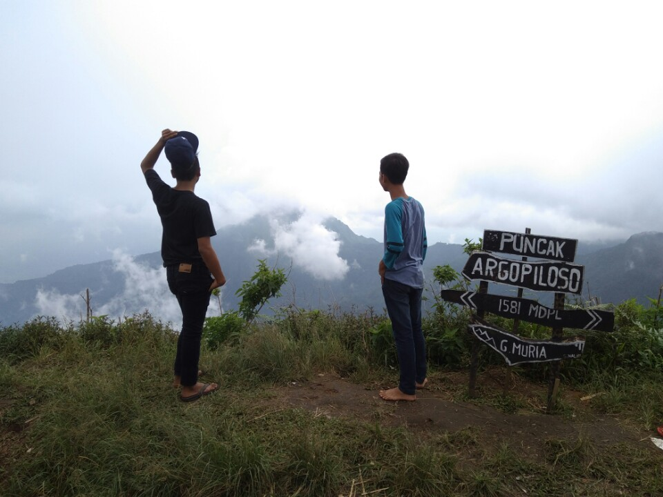

Puncak Argowiloso Kudus

Salah satu puncak yang cukup menantang adalah puncak argo piloso. Jalur pendakian yang masih alami memberikan nilai tersendiri bagi kita yang ingin mencoba melakukan pendakian ke puncak argo piloso. Jalur yang paling mudah adalah dari Air Terjun Montel, kita naek terus menuju Air Tiga Rasa. Daerah ini dinamakan Rejenu. Disini kita dapat melakukan persiapan terakhir sebelum melakukan pendakian, biasanya para pendaki akan mengambil persediaan air disini sebelum melakukan pendakian.
Start awal pendakian kita melewati sumber air terus naek ke atas sampai kita menemukan sebuah latar ombo. Jalur dari start pendakian sampai latar ombo terus menanjak naek dan ini memerlukan kesiapan fisik kita agar bisa melewatinya. Sesampai di latar ombo kita dapat beristirahat sebentar untuk melepas lelah. Di latar ombo ini kita dapat menemukan sebuah petilasan yang sampai saat ini kurang jelas milik siapa petilasan itu. Dari latar ombo perjalanan dilanjutkan terus naek sampai kita sampai pada jalan 90 derajat. Dinamakan demikian karena jalannya tegak lurus 90 derajat melewati akar-akar pohon yang cukup licin. Jadi bisa dibayangkan seperti climbing. Para pendaki diharapkan berhati-hati karena dibawahnya adalah jurang.
Setelah melewati jalan 90 derajat perjalanan dilanjutkan menuju puncak. Bagi temen2 pendaki diharap berhati-hati karena sebelum puncak kita akan melewati kebun pohon pisang. Disini jalannya sangat lembab dan licin dan banyak sekali pacet atau lintah. Saya sendiri juga heran kenapa sebelum puncak ditemui banyak pohon pisang. Selama saya naek gunung baru kali ini menemukan sebelum puncak banyak sekali ditumbuhi pohon pisang. Ketika saya tanyakan kepada penjaga sumber air diRejenu, gak ada yang mengetahui tentang asal-usul terjadinya kebun pisang sebelum puncak argo piloso tersebut. Perjalanan menuju argo wiloso dapat kita tempuh selama 2,5-3 jam. Bisa lebih tergantung kekuatan fisik kita masing2. Sesampai di puncak kita dapat menemukan sebuah petilasan sisa peninggalan zaman dahulu. Satu hal yang tidak kalah menariknya adalah dari puncak argo piloso kita dapat menyaksikan pemandangan alam yang sangat menakjubkan apabila kabut tidak tebal.